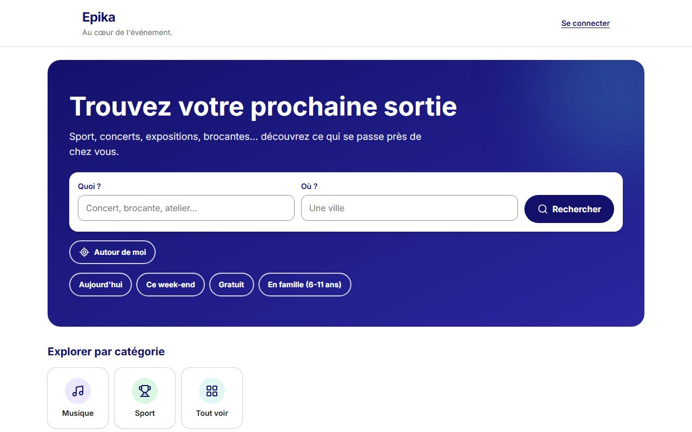

Le parcours, de l'arrivée à la fiche
- Le visiteur arrive sur la pageUn composant serveur lit en parallèle
GET /api/home(les événements à la une) etGET /api/categories(les tuiles). La page arrive déjà écrite : pas d'écran vide en attendant du JavaScript. - Il cherche, ou il prend un raccourciLes champs « Quoi ? » et « Où ? » ouvrent la page de résultats ; « Aujourd'hui », « Ce week-end », « Gratuit » et « En famille » l'ouvrent déjà filtrée.
- Il explore par catégorieUne tuile par catégorie, avec « Tout voir » à la fin. Chaque tuile est un vrai lien vers la recherche de cette catégorie.
- Il parcourt les événements à la uneSix cartes : photo, titre, catégorie, prix (ou « Tarif : voir la fiche » pour un événement importé), prochaine date, nombre d'autres dates, lieu.
- Un clic sur une carte ouvre la ficheC'est le critère de fin de l'issue, et un test de bout en bout le vérifie.
En images
Captures prises par Playwright contre la fausse API d'Epika : toutes les données sont fictives. Sur ordinateur à gauche, sur téléphone à droite.
-


L'ouverture : un titre, une phrase, et déjà les deux champs de la recherche. Sur un téléphone, le bandeau est compact pour que la suite se voie.
Frontend · PR #171
Une recherche qui marche sans JavaScript
Les champs « Quoi ? » et « Où ? » sont ceux de la page de résultats, mais dans un vrai <form method="get" action="/recherche">. Le navigateur construit lui-même l'adresse, /recherche?q=concert&ville=Toulon, sans qu'un script ne soit nécessaire. Un test de bout en bout désactive JavaScript pour le prouver.
Le bandeau est un dégradé navy, avec du texte blanc à 15,8:1 de contraste (du blanc sur le turquoise n'aurait que 2,1:1). Il est prêt à recevoir une photo plus tard, et il est compact sur téléphone, pour que les événements se voient dès le premier écran.
Une décision du 05/11/2026
Des raccourcis, pas de filtres
Pourquoi pas le panneau de filtres ?
Un filtre n'a de sens que si l'on voit ses résultats. Sur l'accueil, la page ne montre qu'une sélection : ce sont donc des raccourcis, qui ouvrent la recherche déjà filtrée.
Les quatre raccourcis
- Aujourd'hui
- Ce week-end
- Gratuit
- En famille (6-11 ans), en attendant que la recherche accepte plusieurs tranches d'âge (#158)
Sur téléphone, les raccourcis forment une seule ligne à faire glisser. Les tuiles des catégories sont construites par toSitePath(), la même fonction que la page de résultats : une adresse n'est écrite qu'à un seul endroit.
Backend (#69) et frontend
À la une, et d'où ça vient
GET /api/home répond au plus six cartes, les mêmes que celles de la recherche, et dit d'où elles viennent. Les règles, décidées avec le product owner :
| Cas | Ce que la page montre |
|---|---|
| Les événements à venir, par date | Ceux qui ont une photo d'abord ; s'ils sont moins de six, complétés par ceux qui n'en ont pas (l'image par défaut d'Epika). Jamais l'animation d'un festival (RG-27). |
| Autour d'une ville | 20 km, puis 50, puis 100, en s'arrêtant au premier rayon qui a au moins 3 événements. |
| Trop peu d'événements à 100 km | Les locaux d'abord, puis des événements nationaux, jusqu'à six. |
| Aucune ville | Des événements de toute la France : « Partout en France ». |
| Une ville introuvable | Les mêmes, sans erreur : l'accueil ne répond jamais d'erreur. |
La ligne qui dit d'où viennent les événements
Sous le titre, une phrase indique le périmètre (« Partout en France » aujourd'hui, « Près de Toulon (20 km) » avec « Autour de moi », #73). Un visiteur ne devrait jamais se demander pourquoi on lui montre des événements à 400 km.
Les cartes
- Un événement importé sans prix connu : « Tarif : voir la fiche »
- Le nombre des autres dates : « + 2 autres dates »
- Les trois premières cartes se chargent tout de suite : c'est le plus grand élément du premier écran (LCP)
Sur téléphone
- Une rangée à faire glisser (
scroll-snap) : la carte suivante dépasse sur le bord - Au clavier, Tab atteint chaque carte et la rangée défile jusqu'à elle
- Dès la tablette, une grille
- Aucun événement : un message clair et un lien vers la recherche, jamais un espace vide
Accessibilité (RGAA 4.1.2)
Structure
- Un seul
h1, unh2par section, unh3par carte - Des champs avec une étiquette visible
- Les icônes décoratives sont cachées aux lecteurs d'écran
- Des liens explicites : « Voir tous les événements », pas « Voir tout »
Mesures
- axe (WCAG 2.0, 2.1 et 2.2, A et AA) : 0 défaut à 360 et 1280 px
- Des cibles d'au moins 44 px
- Pas de défilement horizontal de la page sur téléphone : seule la rangée des cartes défile
- Lighthouse, mobile, build de production : accessibilité 100
Référencement
- Une description propre à l'accueil et une adresse canonique,
/ - Des données structurées JSON-LD :
WebSiteetOrganization - Pas de
SearchAction: Google a retiré la boîte de recherche des résultats en novembre 2024 - Lighthouse : référencement 100, performance 94, bonnes pratiques 96 ; plus grand élément affiché en 2,0 s, aucun décalage de mise en page (CLS 0)
Chaque critère a son test
Vitest
- 212 tests au total à la fin de la PR
- Le test de l'ancienne page d'accueil, mis à jour pour une page asynchrone
Playwright et axe
- 63 tests de bout en bout au total, dont l'accueil contre la fausse API
- La recherche sans JavaScript, les raccourcis, les catégories, les cartes à la une, le glissement au clavier sur téléphone
- axe à 360 et 1280 px
Une PR
- #171Frontend : le bandeau et la recherche, les raccourcis, les catégories, les événements à la une et leur provenance, le glissement sur téléphone, les tests de bout en bout. L'issue #167 (favoris) y est fermée comme doublon de #77.
Les limites assumées, et la suite
« En famille » vaut 6 à 11 ans : la recherche n'accepte qu'une tranche d'âge. Plusieurs tranches sont prévues dans l'issue #158.
Sans « Autour de moi » (#73), les événements à la une sont nationaux. Avec lui, ils deviennent locaux, et la phrase sous le titre l'annonce.
La suite : la mise en cache des pages publiques pour un serveur plus rapide (#168) et le pied de page, à refaire sur maquette avec les liens obligatoires du RGAA (#165).